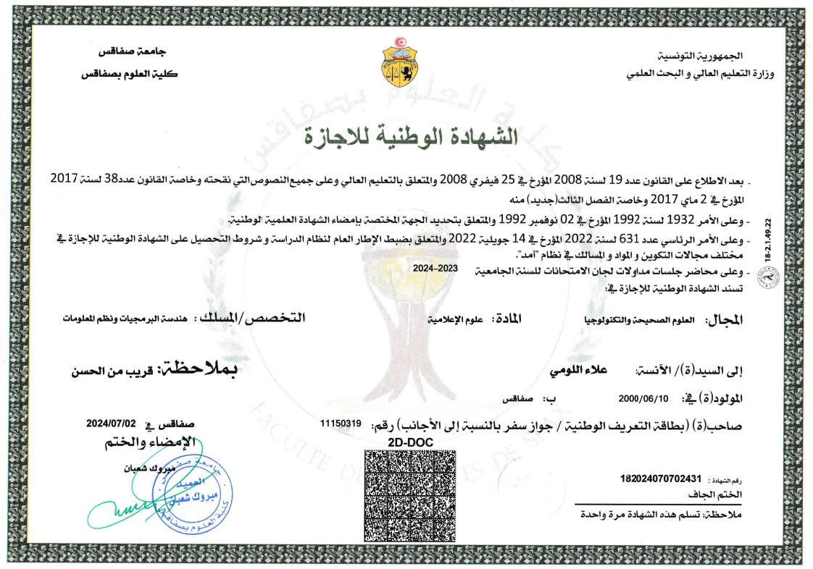
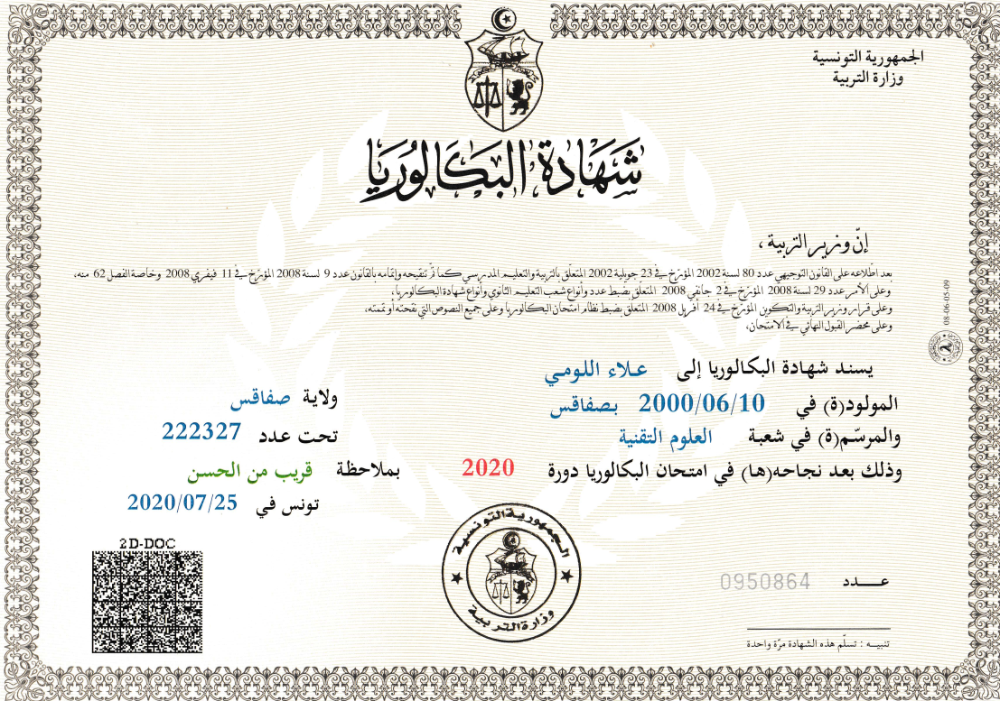

Formation
Génie Informatique
Institut International de Technologie
Cours de soir pour les Professionnels
Diplôme : Génie Logiciel & Informatique Décisionnelle
Mention : Assez Bien
Oct. 2024 - En cours | Sfax, Tunisie
Licence en Sciences de l’Informatique
Faculté des Sciences
Diplôme : Génie Logiciel & Systèmes d’Informations
Sept. 2023 - Juin 2024 | Sfax, Tunisie
Préparatoire intégré en Sciences de l’Informatiques
Faculté des Sciences
Sept. 2020 - Juin 2023 | Sfax, Tunisie
Baccalauréat en Sciences Techniques
Lycée 9 Avril 1938
Mention : Assez Bien
Sept. 2019 - Juil. 2020 | Sfax, Tunisie
Diplômes
 